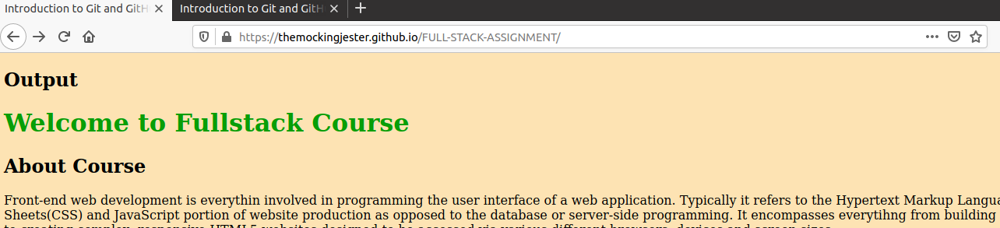

Front-end web development is everythin involved in programming the user interface of a web application. Typically it refers to the Hypertext Markup Language(HTML), Cascading Style Sheets(CSS) and JavaScript portion of website production as opposed to the database or server-side programming. It encompasses everytihng from building a simple page of HTML text to creating complex, responsive HTML5 websites designed to be accessed via various different browsers, devices and screen sizes.
